| Target_1 · KOSPI | Target_2 · 건강식품 지수 | |
|---|---|---|
| 문제의 성격 | 신호가 약하고 시기마다 흔들림. 확실한 단서는 직전 미국 증시 등락 하나 | 거의 요일 리듬 문제. 요일만 써도 AUC 0.926 |
| 최종 모델 | E13 = 얕은 랜덤포레스트(85개 변수) 50% + 강하게 규제한 로지스틱(핵심 9개) 50% | E10 = 로지스틱 + 랜덤포레스트 + XGBoost 평균(80개 변수) |
| 점수를 올린 것 | 모델이 아니라 입력: 주말 보정, 변화율→차이, 환율·검색량 신호 | "3일 뒤 요일의 평소 값 ÷ 오늘" 파생변수, 오늘 이상치 |
| 안전장치 | 미래 값 사용 금지(과거만 참조) · 시계열 5-fold 검증 + 3일 간격 · "평균 − 표준편차"로 선택 · Public 점수는 선택에 반영하지 않음 · 선택 편향까지 통계 검정으로 확인 | |
코드: 01_EDA_피처인사이트.ipynb(①③) · 02_Prophet_시계열분석.ipynb(①) · train.ipynb(②~⑤, 제출 파일 생성) · 03_T1_분기점검증.ipynb(⑥). 실험 기록 experiments.csv.
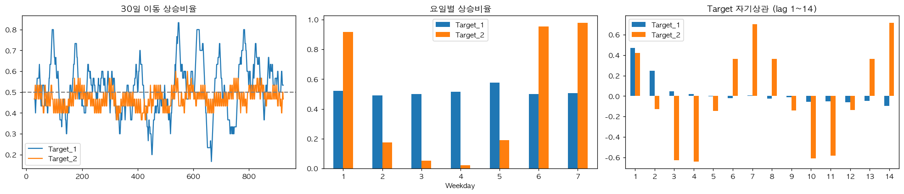
| 확인한 것 | 결과 | 그래서 |
|---|---|---|
| 요일 번호의 정체 (설명서에 없음) | 금융 18개 중 16개가 요일 1·7에서 전날 값과 100% 같음 (휴장) | 1 = 일요일, 7 = 토요일. 주말엔 미국 지수 변화율이 0이 되는 문제 발견 → 주말 보정 변수 |
| 요일만으로 맞힌 AUC | T1 0.484 / T2 0.926 | T2는 요일을 이용, T1은 요일을 지운다 |
| 변수군별 성격 (Prophet 분해) | 금융: 추세 66% · 포털 검색: 요일 54% · 쇼핑: 추세 40% + 요일 18~29% · 날씨: 설명 안 됨 88% | 금융은 원값 대신 변화량, 쇼핑·검색은 같은 요일끼리 비교 |
| 신호가 시기를 넘어 유지되나 (앞 절반 vs 뒤 절반) | T1 상관 0.39 (대부분 잡음) / T2 0.97 (안정) | T1은 강한 규제 + 소수 핵심 변수 |
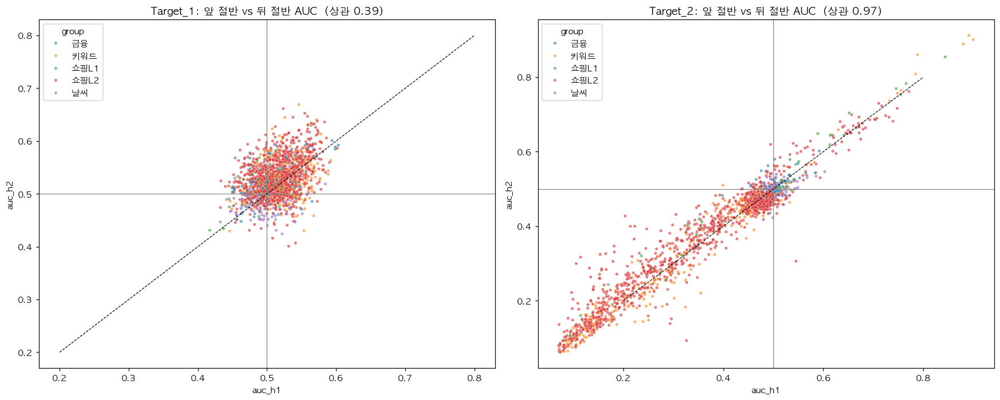
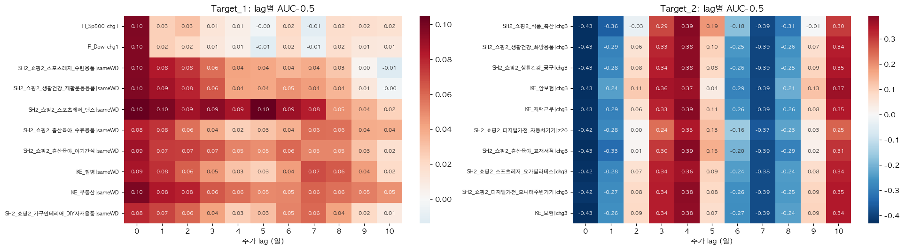
| 처리 | 이유 |
|---|---|
값이 하나뿐인 KE_QR체크인 제거 (Train 기준) | 정보 없음 |
| 쇼핑·검색 클릭량 0 → 결측 (날씨 강수량 0은 유지) | 클릭 0은 실제 0보다 수집 누락일 가능성이 크고, 비율 계산 시 무한대를 만든다 |
| 변화율의 무한대 → 결측, 결측은 각 fold 학습 구간의 중앙값으로 대체 (Pipeline 안) | 검증 구간 정보가 학습에 새지 않게 |
| 표준화는 로지스틱에만 | 원데이터가 이미 0~1이고 트리는 단위와 무관. 로지스틱은 규제가 변수 크기에 공평하게 걸리도록 |
| 파생변수 | 계산 | 근거 (쉬운 설명) | 사용 |
|---|---|---|---|
us_last | 미국 지수 3개 전일 변화율, 주말 0은 직전 거래일 값으로 | 주말엔 미국장이 쉬어 핵심 신호가 7일 중 2일 꺼져 있었다 (일·토 AUC 0.50 → 0.57·0.60) | T1 |
us_diff · fx_diff | 미국 지수·환율의 최근 거래일 차이 | 데이터가 0~1로 눌려 있어 0 근처에서 변화율(%)이 수천 %로 폭발 → 차이가 실제 변화에 비례. 원화 약세(환율↑) → 3일 뒤 KOSPI↓ | T1 |
kefin_swd | 검색어 6개의 "오늘 ÷ 지난 4주 같은 요일 평균" 중앙값 | 평소보다 검색이 많은 날 → 3일 뒤 상승 경향 (§5에서 검증) | T1 |
fi_chg · samewd_grp | 금융 1·3·5일 변화율 + 20일 변동성 / 쇼핑·검색 군별 같은 요일 대비 중앙값 | 금융은 추세가 커서 원값을 쓰면 "몇 월쯤인가"를 외운다 / 수백 개가 같은 정보라 군별 1개로 압축 | T1 |
d3ratio | "지난 4주 동안 3일 뒤와 같은 요일의 평균 ÷ 오늘" | T2의 정의(3일 뒤 > 오늘)를 이미 아는 과거 값으로 흉내. 단독 AUC 0.954 | T2 핵심 |
sh1_anom · z20_kw | 쇼핑 11개 "오늘 ÷ 지난 4주 같은 요일 평균" / 검색어 20일 z-score | 오늘이 평소보다 튀면 3일 뒤엔 평소로 돌아온다(평균회귀). 요일로 못 가르는 월·목 보강 | T2 |
wd_onehot | 요일 7칸 0/1 | 숫자 1~7은 크기 순서가 생겨 부적절 | 공통 |
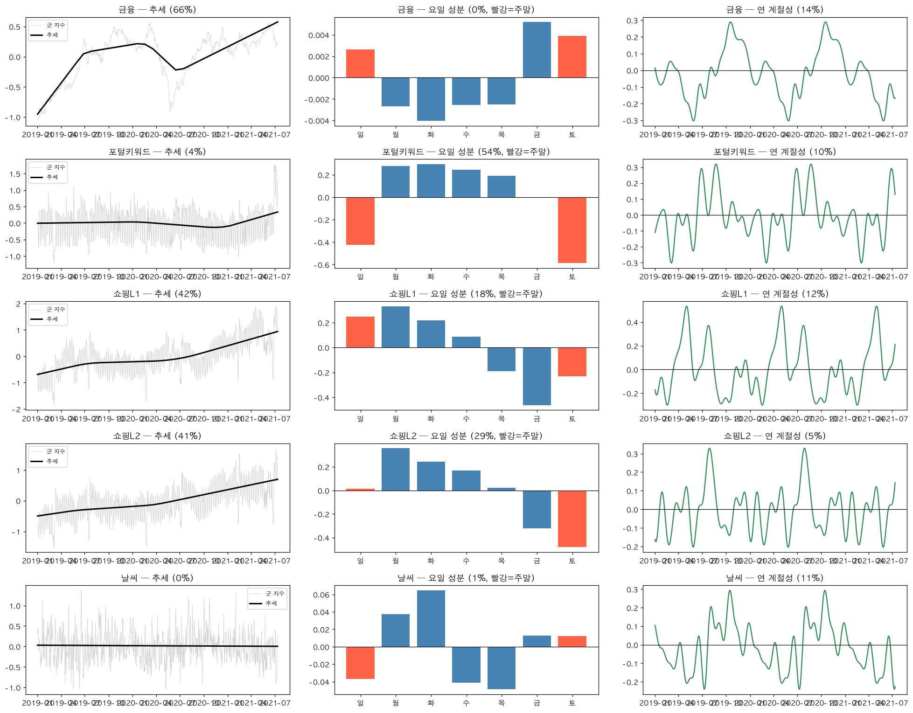
| 방법 | 결과 | 판단 |
|---|---|---|
| EDA 근거로 블록 단위 선택 (565개 → T1 85+9개, T2 80개) | T1 0.540 → 0.596, 가장 큰 도약 | 채택 |
| fold 안 자동 선택 8종 (F검정, 상호정보, L1, 트리 중요도) | 모두 하락 (T1 평균−std 0.520~0.565) | 기각: 작은 표본에선 선택 자체가 우연을 고른다 |
| 블록 하나씩 빼 보기 (5개 fold 중 4개 이상 하락 + 하락폭 ≥ 표준편차/2면 유지) | samewd_grp 빼면 0.599→0.584, d3ratio 빼면 0.967→0.959 | 유지 |
| 금융 상관 0.8 이상 중복 제거 (E7) | 평균은 같고 흔들림 2배 (std 0.048) | 기각 |
| 장치 | 내용 | 왜 |
|---|---|---|
| 시계열 5-fold | TimeSeriesSplit(n_splits=5, gap=3). 검증 구간 약 154일 = Public(100일)과 비슷한 규모 | 무작위로 섞으면 미래를 보고 과거를 맞히는 셈 |
| 3일 간격(gap) | 학습 끝과 검증 시작 사이 3일 비움 | Target이 "3일 뒤"라 학습 마지막 날의 정답이 검증 기간 가격을 포함한다 |
| Pipeline | 결측 대체·표준화·변수 선택을 fold 학습 구간으로만 학습 | 검증 정보 누수 차단 |
| 선택 기준 | 검증 평균 − 표준편차, Train−Valid 격차 감시. Public 점수는 반영 안 함 | Private 200일에서 무너지지 않는, 높으면서 꾸준한 모델 |
Train 924일을 나눈 방법 — 무작위로 섞지 않고 시간 순서대로 5번 나눴다. 매번 과거 전체로 학습하고, 3일을 비운 뒤 다음 154일로 검증한다.
| fold | 학습 (Time_step) | 비운 3일 | 검증 (Time_step) | 학습 / 검증 일수 |
|---|---|---|---|---|
| 1 | 1 ~ 151 | 152 ~ 154 | 155 ~ 308 | 151 / 154 |
| 2 | 1 ~ 305 | 306 ~ 308 | 309 ~ 462 | 305 / 154 |
| 3 | 1 ~ 459 | 460 ~ 462 | 463 ~ 616 | 459 / 154 |
| 4 | 1 ~ 613 | 614 ~ 616 | 617 ~ 770 | 613 / 154 |
| 5 | 1 ~ 767 | 768 ~ 770 | 771 ~ 924 | 767 / 154 |
fi_chg 72, samewd_grp 3, wd_onehot 7, us_last 3kefin_swdwd_onehot 7, d3ratio 12, z20_kw 50, sh1_anom 11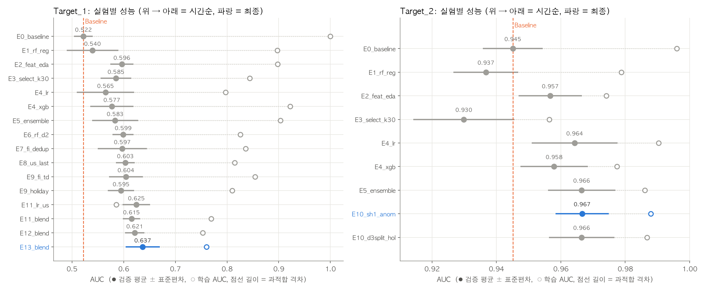
| 단계 | 시도 | T1 검증 AUC | 배운 것 |
|---|---|---|---|
| E0 → E1 | 같은 변수, 나무만 얕게 | 0.522 → 0.540 | 격차는 줄지만 점수는 그대로 → 모델이 아니라 입력이 문제 |
| E2 | EDA 근거 변수 82개 | 0.596 | 가장 큰 도약 |
| E4·E5·E6 | 로지스틱·XGB·앙상블, 깊이·잎·C 그리드 24개 | 0.565~0.599 | 하이퍼파라미터는 병목이 아님. 같은 점수면 단순한 쪽(깊이 2) |
| E8 | 주말 미국 지수 보정 | 0.603 | 이유가 분명한 개선 |
| E11 → E12 | 미국장 로지스틱 혼합 → 변화율을 차이로 + 환율 | 0.615 → 0.621 | 핵심 신호를 단순 모델에 맡기기 |
| E13 | + 유가 차이, 검색량 심리 | 0.637 | §5에서 우연이 아님을 검정 |
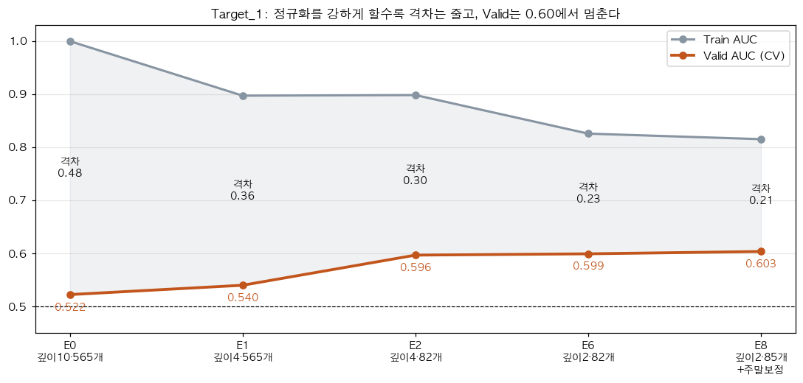
| Baseline (E0) | 최종 | 개선 | 검증 표준편차 | 학습−검증 격차 | 이어 붙인 검증 AUC* | |
|---|---|---|---|---|---|---|
| T1 (E13) | 0.522 | 0.637 | +0.115 | 0.033 | 0.124 (Baseline 0.478) | 0.620 |
| T2 (E10) | 0.945 | 0.967 | +0.022 | 0.008 | 0.021 | 0.964 |
| 평균 | 0.734 | 0.802 | +0.068 | 0.792 |
* 5개 fold의 검증 예측을 이어 붙여 한 번에 계산한 AUC. Private은 200일을 한 번에 채점하므로 이 값이 기대치에 더 가깝다.
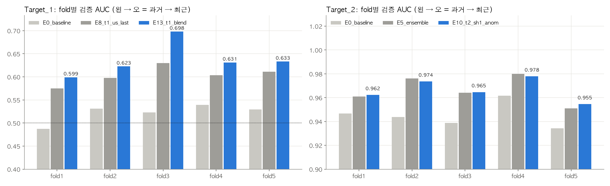
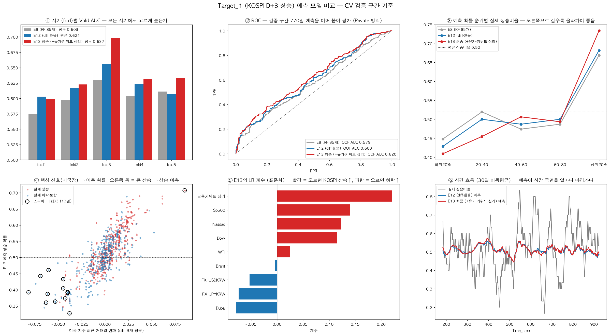
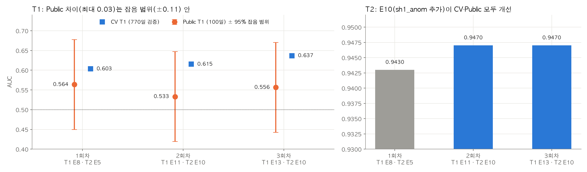
차이는 T1에서만 났다(T2는 Public에서도 E10 > E5). 우리 검증 예측과 Test 설명변수의 분포만 써서 원인을 찾았다.
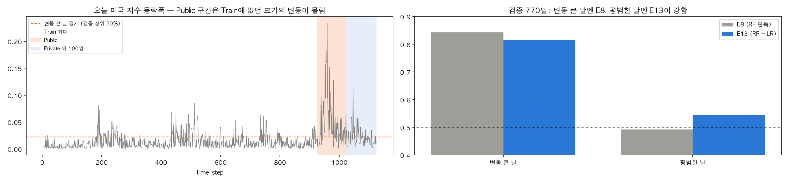
| 구간 구성 (변동 큰 날 비율) | E8 기대 AUC | E13 기대 AUC | E13이 나을 확률 |
|---|---|---|---|
| 우리 검증 770일 (20%) | 0.579 | 0.620 | 96% |
| Public 100일 (72%) | 0.765 | 0.766 | 51% |
| Private 200일 (52%) | 0.702 | 0.719 | 82% |
검증 예측을 각 구간의 "변동 큰 날" 비율에 맞춰 200일씩 2,000번 다시 뽑아 계산한 기대 AUC.
"변동이 큰 날"은 미리 예측할 필요가 없다. 기준이 오늘 이미 마감된 미국장 등락폭이라 예측 시점에 알고 있는 값이다. 경계값은 매 fold 학습 구간의 상위 20%로만 정했다.
| 모델 | CV 평균 | 평균−std | 검증 구성 기대 AUC | Private 구성 기대 AUC | Private에서 E13보다 나을 확률 |
|---|---|---|---|---|---|
| E13 (현재) | 0.637 | 0.604 | 0.621 | 0.718 | — |
| S1: 오늘 등락폭이 크면 E8 | 0.623 | 0.580 | 0.612 | 0.720 | 58% ❌ |
| S2: 최근 20일 변동성이 크면 E8 (위기 국면) | 0.627 | 0.596 | 0.614 | 0.717 | 48% ❌ |
T1은 신호가 약해, 후보를 여러 개 시도하다 보면 우연히 좋아 보이는 것을 고를 위험이 있다. 마지막 세 가지 판단을 결과를 보기 전에 기준을 정해 두고 검정했다 (03_T1_분기점검증.ipynb).
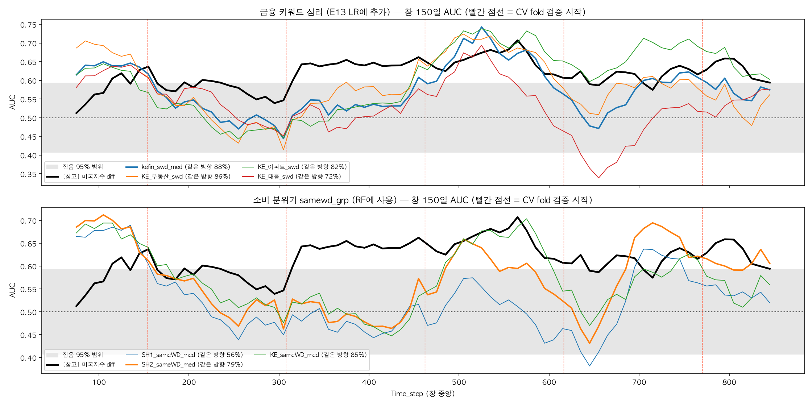
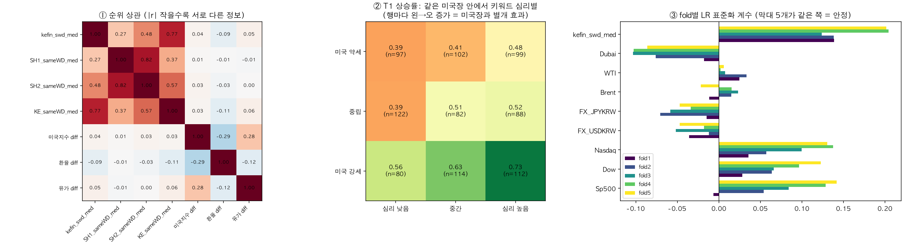
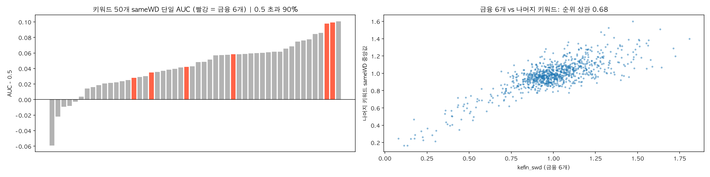
| 기준 (미리 정함) | 검색량 심리 kefin_swd |
|---|---|
| 순환 이동 p < 0.05 | ✅ 0.002 |
| 블록 부트스트랩 95% 구간이 0.5 제외 | ✅ 0.521 ~ 0.636 |
| 앞·뒤 절반 같은 방향 / 150일 창 70% 이상 같은 방향 | ✅ 0.550·0.606 / ✅ 88% |
| fold별 계수 부호 일치, 미국장 고정 후에도 효과 | ✅ 5/5 · ✅ 3개 조건 모두 증가 |
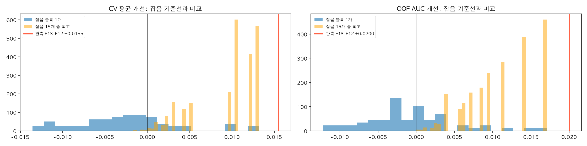
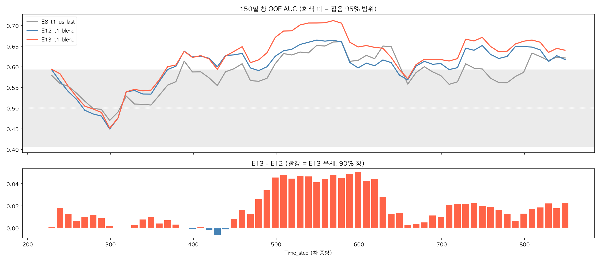
| 기준 (미리 정함) | 결과 | |
|---|---|---|
| 블록 부트스트랩에서 E13 > E12일 확률 ≥ 90% | 99% (차이 +0.020, 95% 구간 +0.004 ~ +0.039) | ✅ |
| "잡음 후보 15개 중 최고"보다 클 확률 p < 0.10 | p ≈ 0.016 | ✅ |
| 랜덤포레스트 난수 10개 중 8개 이상 E13 우세 | 10 / 10 (차이 +0.014 ~ +0.017) | ✅ |
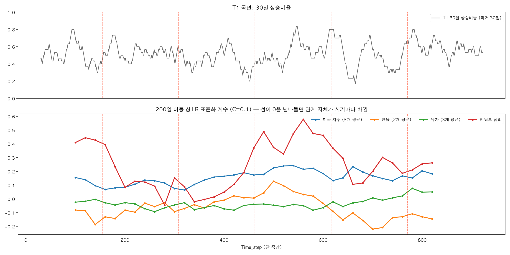
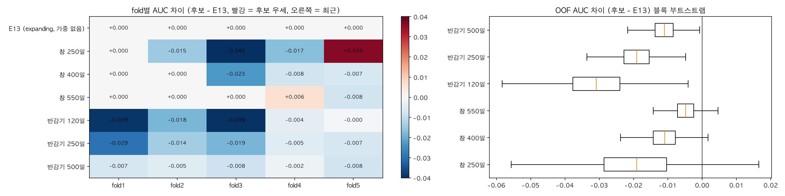
Prophet으로 T1을 직접 예측했을 때 1년 주기를 켜면 0.565, 끄면 0.492였다. 그래서 1년 주기 위치(sin·cos)를 E13의 로지스틱 쪽에 넣어 같은 방식으로 검정했다.
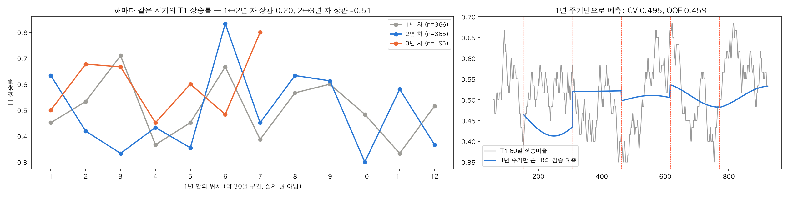
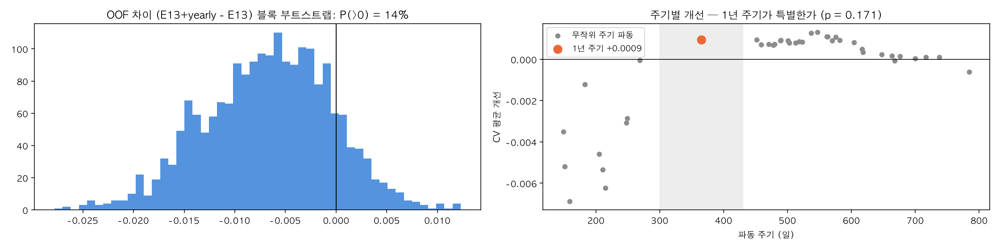
| 기준 (미리 정함) | 결과 | |
|---|---|---|
| 블록 부트스트랩에서 후보 > E13일 확률 ≥ 95% | 14% | ❌ |
| 무작위 주기 파동보다 나을 p < 0.05 | 0.171 | ❌ |
| 최근 fold 4·5 ≥ E13 | 0.6305 vs 0.6322 | ❌ |
| seed 10개 중 8개 이상 우세 | 10/10 (차이 +0.001) | ✅ |
TabPFN(Hollmann et al., Nature 2025)은 합성 데이터로 사전학습한 신경망이 학습 구간을 예시로 보고 바로 예측하는 방식이다. 표본 1만 개 이하에서 부스팅보다 강하다고 보고돼, 과적합이 가장 큰 문제였던 T1에 시험했다. 외부 데이터와 새 변수 없이 E13과 같은 입력만 썼고, 사전학습 가중치는 공개된 v2를 사용했다.
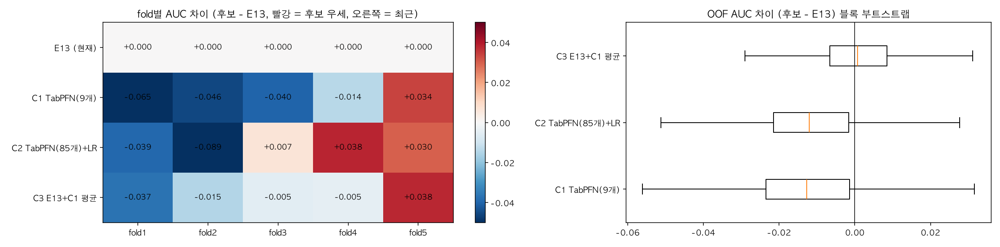
| 후보 (미리 3개로 고정) | CV 평균 ± std | 평균−std | E13보다 나을 확률 | 판정 |
|---|---|---|---|---|
| E13 (현재) | 0.637 ± 0.033 | 0.604 | — | 유지 |
| C1 TabPFN 단독 (핵심 9개) | 0.611 ± 0.050 | 0.561 | 23% | ❌ |
| C2 TabPFN(85개) + 로지스틱 | 0.626 ± 0.067 | 0.559 | 21% | ❌ |
| C3 E13 + C1 평균 | 0.632 ± 0.046 | 0.586 | 52% | ❌ |
04_T1_TabPFN검증.ipynb는 별도 패키지 tabpfn이 필요해 제출 코드에서 제외)| # | 할 일 | 결과 |
|---|---|---|
| 1 | 압축을 풀면 1_notebooks(노트북) · 2_data(제공 데이터) · 3_outputs(제출본·실험 기록) · 4_figures(보고서 그림, 번호순) 폴더. 커널: Python 3.11 (scikit-learn 1.9, xgboost, pandas) | 노트북은 1_notebooks에서 실행 (상대경로) |
| 2 | 1_notebooks/train.ipynb §1에서 MODE = 'private' 확인 후 Run All | §4 실험은 experiments.csv 캐시로 몇 초 만에 지나가고(FORCE=True면 전부 재학습), §5에서 T1=E13·T2=E10 자동 선택 → Train 924일 전체로 재학습 |
| 3 | §6 제출 셀 | 3_outputs/private_4반_최승우.csv 생성 + 형식 검증(열 이름·행 수·0~1·결측 없음) |
| 4 | (선택) 01_EDA · 02_Prophet · 03_T1_분기점검증 | 보고서 그림 1~4, 10~19의 근거 (그림 20의 04_T1_TabPFN검증은 tabpfn 패키지가 필요해 제외) |
shift(+n)·과거 rolling만 사용(미래 값·중앙 정렬 없음) ② Test 행의 Target은 어디에도 쓰지 않음 ③ Test는 학습에 쓰지 않고, 시간순으로 이어 붙여 Test 행이 자기보다 과거의 설명변수만 참조하게 함 ④ 결측 대체·표준화는 fold 학습 구간으로만 학습 ⑤ 상수 제거·상관 계산은 Train 행만 사용.